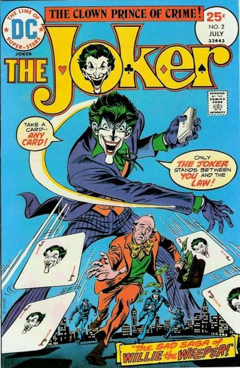

Jokermania

Drugo izdanje
Joker se udružuje sa kriminalcem Willi the Weeper koji ima naviku da plače nekontrolisano dok druge ne natera na plač što njega dovodi do ludačkog smejanja.

Joker se udružuje sa kriminalcem Willi the Weeper koji ima naviku da plače nekontrolisano dok druge ne natera na plač što njega dovodi do ludačkog smejanja.